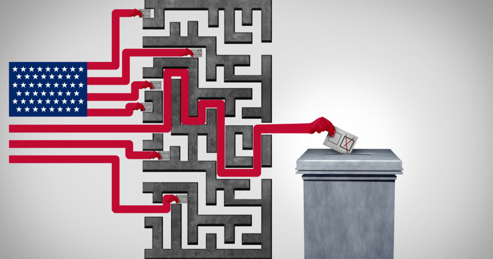
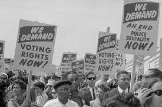
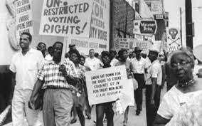
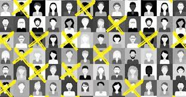
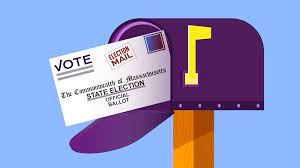
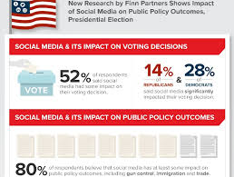
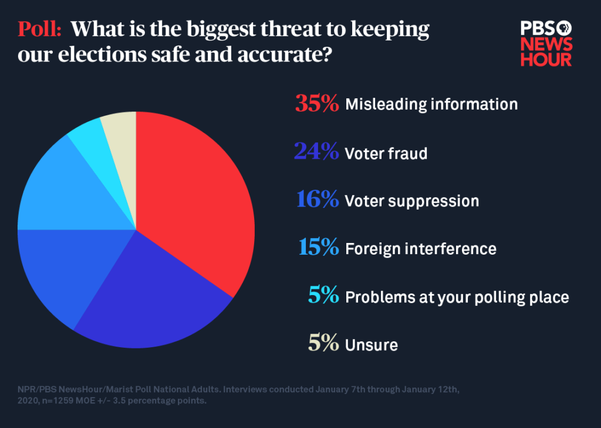

Voter suppression is a strategy to influence the outcome of an election by discouraging or preventing specific groups of people from voting.
Voter suppression in the U.S., characterized by the implementation of discriminatory voter ID laws, restrictions on early voting, and voter roll purges, disproportionately impacts marginalized communities, particularly African Americans and Latinos. These tactics, rooted in historical efforts to disenfranchise certain populations, challenge the democratic principle of equal representation and require comprehensive federal measures to ensure unbiased access to the ballot. To combat voter suppression in the United States effectively, it is imperative to implement a multifaceted approach comprising legal reforms, grassroots mobilization, and public education initiatives, aimed at fostering electoral integrity, promoting inclusive voter participation, and mitigating discriminatory practices, all while leveraging technological innovations to enhance the accessibility and security of the voting process.

History of Voter Suppression
Throughout history, various tactics have been used to suppress voters, such as poll taxes, literacy tests, and more.
The history of voter suppression in the United States is a long and complicated one, rooted in issues of race, class, and political power. From the nation's earliest days to contemporary times, various groups have faced efforts to deny them the right to vote or to limit their voting power. Here’s a brief overview of some of the most significant instances and methods of voter suppression in U.S. history:

1. **Post-Revolutionary America**: Initially, only white male property owners could vote. This excluded women, Native Americans, African Americans, and white men without property.
2. **Post-Civil War Reconstruction**: The 15th Amendment, ratified in 1870, prohibited voting discrimination on the basis of race or color. However, Southern states quickly sought ways to disenfranchise Black voters. They used methods such as:
- **Poll taxes**: A fee that citizens had to pay to vote. This disproportionately affected African American and poor white voters.
- **Literacy tests**: Designed to be almost impossible to pass and often administered in a biased manner.
- **Grandfather clauses**: Allowed white voters to bypass literacy tests and poll taxes if their grandfathers had been eligible to vote.
3. **Violence and Intimidation**: Groups like the Ku Klux Klan used violence and intimidation to keep Black people from voting.
4. **Jim Crow Era**: In the late 19th and early 20th centuries, Southern states passed laws that entrenched racial segregation and further curtailed Black voting rights.

5. **The White Primary**: For decades, Southern states held "white primaries." Since the Democratic Party dominated Southern politics, these primaries effectively decided elections. Black voters were excluded.
6. **Mid-20th Century**: The Civil Rights Movement highlighted the systemic suppression of Black voters. The 1965 Voting Rights Act (VRA) aimed to eliminate racial discrimination in voting. The act targeted areas with histories of discrimination, requiring them to receive federal approval for changes in voting laws.
7. **Voting Rights Act challenges**: In 2013, the U.S. Supreme Court in Shelby County v. Holder invalidated a key provision of the VRA, leading to concerns about the revival of voter suppression tactics.
8. **Modern Voter Suppression**: In recent decades, measures such as voter ID laws, voter roll purges, reductions in early voting, and closing polling places in certain areas have raised concerns about voter suppression, particularly in minority communities.
9. **Gerrymandering**: While not direct voter suppression, gerrymandering (manipulating district boundaries for political advantage) can effectively reduce the voting power of certain groups.
10. **Disenfranchisement of Felons**: Many states have laws that prevent people with felony convictions from voting, either permanently or for a set period. This has a disproportionate impact on Black and Latino populations.
11. **Suppression of Native American Voting Rights**: Native Americans have faced unique challenges, such as Voter ID laws that don’t recognize tribal IDs, distant polling places, and jurisdictional complexities.
The fight against voter suppression continues today, with various stakeholders working to ensure that all Americans have equal access to the ballot.
Modern Day Voter Suppression
Today, voter suppression manifests in many ways, including strict ID laws, limited early voting, and disenfranchisement.
More than 400 anti-voter bills introduced in 48 states in recent years that create barriers for people to register to vote.
These laws disproportionately impact POC, students, the elderly, people with disabilities, and immigrants.
Voter suppression in the modern U.S. has been a topic of concern and debate, with various instances and tactics alleged to disenfranchise certain groups, especially minority voters. Here are some examples of alleged voter suppression tactics or incidents from recent years:
1. **Strict Voter ID Laws**: Some states have implemented strict photo ID requirements that critics argue disproportionately affect minority voters, the elderly, and low-income citizens who may not have easy access to the required forms of identification.
2. **Purges of Voter Rolls**: Purges can ensure accuracy, but there's concern about voters being mistakenly purged. The Brennan Center found that between 2014 and 2016, states removed almost 16 million voters from the rolls, with some of these purges being controversial.

3. **Reducing Early Voting**: Some states have reduced their early voting periods. Critics argue this limits opportunities for working-class people who might find it difficult to get to the polls on Election Day.
4. **Closing Polling Places**: There have been closures or relocations of polling places in various states, which could make it harder for some citizens, especially in minority neighborhoods, to vote.
5. **Limiting Mail-in Voting**: During the COVID-19 pandemic, mail-in voting became a significant point of contention. Some states resisted expanding mail-in voting, which critics argue made it harder for people to vote safely during the pandemic.

6. **Gerrymandering**: While it's not direct voter suppression, gerrymandering—drawing electoral district lines in biased ways—can reduce the influence of certain groups' votes. This can indirectly suppress the impact of their votes.
7. **Restoration of Voting Rights for Felons**: Some states have laws that permanently disenfranchise citizens with past felony convictions or make it difficult for them to have their rights restored.
8. **Misinformation and Intimidation**: There have been reports of misinformation campaigns aimed at confusing or intimidating voters.
9. **Long Wait Times at Polling Places**: Under-resourced polling places can lead to long wait times, which can discourage voting, especially in working-class and minority neighborhoods.
While many argue these tactics are meant to maintain voting integrity or streamline processes, critics believe they disproportionately affect minority and disadvantaged groups. It's essential to approach the topic critically, fact-check, and gather information from multiple sources to form an informed opinion.
Take Action
Here are some ways you can combat voter suppression: educate yourself, spread awareness, volunteer, and support organizations fighting for voting rights.
Combatting voter suppression involves both understanding the tactics used to suppress votes and implementing strategies to ensure all eligible citizens can easily participate in the electoral process. Here's a list of methods to combat voter suppression: 1. **Voter Education and Outreach**:
- Conduct public campaigns to educate voters about their rights, how to register, where to vote, and what to do if they encounter problems.
- Use social media, community meetings, and local media outlets to share information.
2. **Legal and Policy Reforms**:
- Ensure that voter ID laws, if enacted, are not overly restrictive and provide free IDs for those without them.
- Repeal or modify laws that make it unnecessarily difficult for certain groups, like the elderly, students, and minorities, to vote.
3. **Voter Registration Drives**:
- Facilitate opportunities for citizens to register or update their voter registration through community events, schools, and online platforms.
4. **Expand Voting Methods**:
- Support early voting, mail-in voting, and no-excuse absentee voting to increase flexibility for voters.
- Offer same-day registration.

5. **Protect Voting Infrastructure**:
- Ensure voting machines are secure, up-to-date, and have paper trails.
- Regularly audit election results.
6. **Challenge Suppressive Measures**:
- Litigate against unfair redistricting, voter roll purges, and other suppressive tactics.
- Engage advocacy groups and civil rights organizations to monitor elections and report violations.
7. **Increase Polling Places and Hours**:
- Ensure adequate polling stations in all neighborhoods, especially in densely populated areas, to reduce wait times.
- Extend polling hours to accommodate working voters.
8. **Train Poll Workers**:
- Provide comprehensive training to poll workers on election laws, voters' rights, and handling challenges or conflicts.
9. **Restoration of Voting Rights**:
- Advocate for policies that restore the voting rights of individuals with felony convictions once they've served their sentences.
10. **Automatic Voter Registration**:
- Implement systems where eligible citizens are automatically registered to vote when they interact with government agencies, unless they choose to opt out.
11. **Combat Misinformation**:
- Monitor and counter false information about voting procedures, dates, and requirements.

12. **Engage Community and Religious Leaders**:
- Utilize respected figures in communities to promote the importance of voting and to inform about voting rights and procedures.
13. **Partnerships with Businesses**:
- Encourage businesses to offer paid time off on Election Day or to provide transportation to polling places.
14. **Public Pressure and Advocacy**:
- Rally public opinion against voter suppression measures through protests, petitions, and public awareness campaigns.
15. **Monitor Elections**:
- Invite international and domestic observers to monitor elections and provide feedback on their fairness and accessibility.
16. **Strengthen Legal Protections**:
- Advocate for stronger state and federal laws that protect against voter discrimination and suppression.
The battle against voter suppression is ongoing, but with vigilance, education, and proactive strategies, it's possible to ensure that the fundamental right to vote is preserved for all eligible citizens.